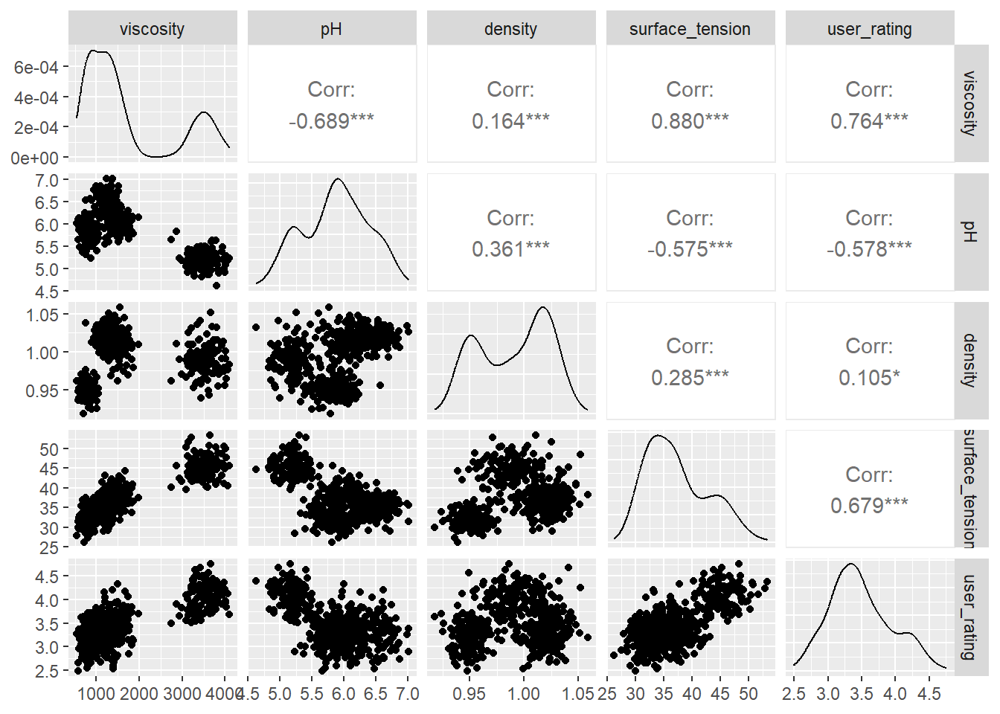

On considère un échantillon de 500 produits anti-âge disponible ici .
Le jeu de données consiste en 6 variables :
product_type,
viscosity en mPa.s,
pH,
density en g/cm\(^3\),
surface_tension en mN/m,
user_rating, correspondant à une note moyenne donnée par les consommateurs (entre 1 et 5).
On cherche à expliquer la note donnée par les consommateurs en fonction des autres variables.
Importer les données dans R et effectuer un rapide résumé statistique.
Voir le code
cosmetics <-read.csv("cosmetics.csv",row.names=1)library(tidyverse)cosmetics <- cosmetics %>%mutate(product_type=as.factor(product_type)) # On met cette variable en facteursummary(cosmetics)
product_type viscosity pH density surface_tension
cream :122 Min. : 534.9 Min. :4.620 Min. :0.9180 Min. :26.20
gel :122 1st Qu.: 893.0 1st Qu.:5.515 1st Qu.:0.9577 1st Qu.:33.10
lotion:108 Median :1290.8 Median :5.900 Median :0.9950 Median :36.20
serum :148 Mean :1711.8 Mean :5.881 Mean :0.9905 Mean :37.30
3rd Qu.:1826.4 3rd Qu.:6.240 3rd Qu.:1.0180 3rd Qu.:41.23
Max. :4104.0 Max. :7.020 Max. :1.0590 Max. :53.30
user_rating
Min. :2.490
1st Qu.:3.170
Median :3.415
Mean :3.481
3rd Qu.:3.763
Max. :4.760
Représenter graphiquement les liens pouvant exister entre la variable user_rating et les autres.
Voir le code
library(GGally)ggpairs(cosmetics[,2:6])

Commentaire
Bien que les corrélations calculées entre les différentes variables soient significativement non nuls, les nuages de points ne montrent pas de tendance particulière, si ce n’est entre les variables user_rating et surface_tension. On remarque toutefois des clusters sur certains nuages de points, notamment pour la variable viscosity, montrant l’impact de la variable catégorielle product_type, indiquant si le produit est une crème, un gel, etc…
Un modèle linéaire semble-t-il adapté pour prédire la note donnée par les consommateurs ? Ecrire mathématiquement ce modèle.
Réponse
D’après la significativité des coefficients de corrélation, on peut penser qu’un modèle linéaire est adapté aux données. On fera toutefois attention au fait que les variables explicatives sont parfois fortement corrélées entre elles. Etant donné la présence d’une variable qualitative (product_type), celui-ci s’écrit un peu différemment. On note :
\(Y\) la variable réponse user_rating, (observations \(y_1,\ldots,y_n\));
\(X_1\) la variable product_type, (observations \(x_{1,1},\ldots,x_{n,1}\));
\(X_2\) la variable viscosity, (observations \(x_{1,2},\ldots,x_{n,2}\));
\(X_3\) la variable pH, (observations \(x_{1,3},\ldots,x_{n,3}\));
\(X_4\) la variable density, (observations \(x_{1,4},\ldots,x_{n,4}\));
\(X_5\) la variable surface_tension, (observations \(x_{1,5},\ldots,x_{n,5}\)).
On a alors pour tout \(i \in \{1,\ldots,n\}\)\[y_i = \beta_0 + \beta_1^{gel} \mathbf{1}_{gel}(x_{i,1}) + \beta_1^{lotion} \mathbf{1}_{lotion}(x_i,1) +\beta_1^{serum} \mathbf{1}_{serum}(x_{i,1}) + \beta_2 x_{i,2} + \beta_3 x_{i,3} +\beta_4 x_{i,4} + \beta_5 x_{i,5} + \varepsilon_i\] où les \(\varepsilon_i\) son i.i.d. de loi \(\mathcal{N}(0,\sigma^2)\).
Remarque : Le modèle ne contient ici pas de coefficient \(\beta_1^{cream}\) pour des raisons d’identifiabilité. En d’autres termes, si on intégrait ce coeffcient dans le modèle, différentes valeurs des coefficients aboutiraient aux mêmes valeurs réponses, ce qui poseraient un souci quant à la bonne définition du problème.
Ajuster un modèle linéaire aux données, permettant d’expliquer user_rating en fonction des autres variables.
Call:
lm(formula = user_rating ~ ., data = cosmetics)
Residuals:
Min 1Q Median 3Q Max
-0.80811 -0.20967 0.01328 0.19511 0.93520
Coefficients:
Estimate Std. Error t value Pr(>|t|)
(Intercept) 3.037e+00 9.844e-01 3.085 0.00215 **
product_typegel 1.238e-01 1.965e-01 0.630 0.52905
product_typelotion 4.285e-02 1.621e-01 0.264 0.79161
product_typeserum 9.843e-02 2.168e-01 0.454 0.65001
viscosity 2.848e-04 7.241e-05 3.933 9.6e-05 ***
pH -1.651e-01 6.498e-02 -2.542 0.01134 *
density 6.947e-01 8.555e-01 0.812 0.41714
surface_tension 4.606e-03 5.795e-03 0.795 0.42706
---
Signif. codes: 0 '***' 0.001 '**' 0.01 '*' 0.05 '.' 0.1 ' ' 1
Residual standard error: 0.2916 on 492 degrees of freedom
Multiple R-squared: 0.5926, Adjusted R-squared: 0.5868
F-statistic: 102.2 on 7 and 492 DF, p-value: < 2.2e-16
Quel est le pourcentage de variance expliquée par le modèle ?
Quelles variables ne semblent pas expliquer la note donnée par les consommateurs ?
Réponse
Le coefficient \(R^2\) calculé est de 0.5926. Le modèle explique donc 59,26% de la variance.
Les variables ayant un coefficient non significatif sont les suivantes :
product_type;
density;
surface_tension.
Elles ne semblent donc pas expliquer la note donnée par les consommateurs.
À l’aide de la fonction anova(), réaliser un test de modèles emboîtés afin de déterminer les variables intervenant réellement dans le modèle. Ecrire les hypothèses envisagées dans ce test.
Réponse
D’après le résumé statistique effectué précédemment, on envisage le test \[ H_0 : \beta_1^{gel}=\beta_1^{lotion} = \beta_1^{serum}=\beta_4=\beta_5=0 \quad \text{contre} \quad H_1 : \text{l'un de ces coeffcients est non nul.} \] On rappelle que la statistique de test utilisée ici est \[ F = \dfrac{n-p}{q} \times \dfrac{SCR_0 - SCR}{SCR}, \] qui suit une loi de Fisher \(\mathcal{F}_{n-p}^q\) sous \(H_0\), où
\(p\) est le nombre de paramètres à estimer dans le modèle complet;
\(q\) est la différence du nombre de paramètres à estimer entre le modèle complet et le modèle réduit;
\(SCR\) est la somme des carrés résiduelle dans le modèle complet;
\(SCR_0\) est la somme des carrés résiduelle dans le modèle réduit.
Quel modèle semble avoir la meileure performance prédictive ? Comparer avec les coefficients de détermination \(R^2\) obtenus par chacun des modèles.
Réponse
Avec un \(MSE\) inférieur, le modèle réduit réalise moins d’erreur sur la prédiction de nouvelles données. Le coefficient de détermination \(R^2\) de ce modèle est pourtant plus petit que celui du modèle complet.
summary(lm_cosmetics_reduit)
Call:
lm(formula = user_rating ~ product_type + viscosity + pH, data = cosmetics)
Residuals:
Min 1Q Median 3Q Max
-0.82786 -0.21084 0.00943 0.19225 0.93313
Coefficients:
Estimate Std. Error t value Pr(>|t|)
(Intercept) 3.9425852 0.4315259 9.136 < 2e-16 ***
product_typegel 0.0958744 0.1874004 0.512 0.6092
product_typelotion 0.0253044 0.1573501 0.161 0.8723
product_typeserum 0.0069341 0.2013920 0.034 0.9725
viscosity 0.0002835 0.0000722 3.926 9.87e-05 ***
pH -0.1661681 0.0649299 -2.559 0.0108 *
---
Signif. codes: 0 '***' 0.001 '**' 0.01 '*' 0.05 '.' 0.1 ' ' 1
Residual standard error: 0.2914 on 494 degrees of freedom
Multiple R-squared: 0.5914, Adjusted R-squared: 0.5873
F-statistic: 143 on 5 and 494 DF, p-value: < 2.2e-16
Exercice 2
On considère ici les données présentées dans les slides de cours sur le rendement de 80 champs de tomates, disponibles ici .
Importer les données dans R et effectuer un rapide résumé statistique. Représenter par un graphique simple les données.
Call:
lm(formula = Rendement ~ ., data = champs_tomates)
Residuals:
Min 1Q Median 3Q Max
-0.249633 -0.046002 -0.000089 0.061775 0.233529
Coefficients:
Estimate Std. Error t value Pr(>|t|)
(Intercept) 2.1283588 0.2857600 7.448 1.42e-10 ***
Engrais 0.0013818 0.0004776 2.894 0.005001 **
Irrigation 0.0082729 0.0040953 2.020 0.046994 *
Heures_Travail 0.0021900 0.0031519 0.695 0.489337
Qualite_Sol 0.0041781 0.0011842 3.528 0.000723 ***
Temperature 0.0180394 0.0115351 1.564 0.122114
---
Signif. codes: 0 '***' 0.001 '**' 0.01 '*' 0.05 '.' 0.1 ' ' 1
Residual standard error: 0.1016 on 74 degrees of freedom
Multiple R-squared: 0.3499, Adjusted R-squared: 0.306
F-statistic: 7.965 on 5 and 74 DF, p-value: 4.767e-06
# Le modèle explique 34,99% de la variance.
Quels coefficients de la régression ne semblent pas significatifs ? Préciser la statistique de test utilisée.
Réponse
Pour chaque coefficient \(\beta_i\), on effectue le test \[H_0 : \beta_i = 0 \quad \text{contre} \quad H_1 : \beta_i \neq0.\] Sous \(H_0\), on a \(t_i = \dfrac{\hat{\beta}_i}{\hat{\sigma}_i} \sim \mathcal{T}_{n-p}\), où \(p\) est le nombre de paramètres à estimer. On rejette \(H_0\) au seuil \(\alpha\) si \(|t_i| > t_{n-p}(1-\alpha/2)\) le quantile d’ordre \(1-\alpha/2\) de la loi \(\mathcal{T}_{n-p}\).
Ici, les coefficients associés aux variables Heures_Travail et Temperature ne sont pas signifcativeùent non nuls.
Réaliser un test de modèles emboîtés afin de tester la nullité simultanée de ces coefficients. Quel est la statistique de test utilisée ici ?
Réponse
On teste ici \[H_0 : \beta_3 = \beta_5 = 0 \quad \text{contre} \quad H_1: \beta_3\neq 0 \ \text{ou} \ \beta_5 \neq 0. \] Sous \(H_0\), la statistique de test \[ F = \dfrac{n-p}{2}\times \dfrac{SCR_0-SCR}{SCR}\] suit la loi de Fisher \(\mathcal{F}_{n-p}^2\), où
\(SCR\) est la somme des carrés résiduelle quand on prend toutes les variables dans le modèle;
\(SCR_0\) est la somme des carrés résiduelles quand on ne prend pas les variables Heures_Travail et Temperature dans le modèle.
Analysis of Variance Table
Model 1: Rendement ~ Engrais + Irrigation + Heures_Travail + Qualite_Sol +
Temperature
Model 2: Rendement ~ Engrais + Irrigation + Qualite_Sol
Res.Df RSS Df Sum of Sq F Pr(>F)
1 74 0.76409
2 76 0.79376 -2 -0.029669 1.4367 0.2443
Ici, on ne rejette pas l’hypothèse nulle (\(p\)-value égale à 0.2443).
Comme dans l’exercice précédent, on souhaite comparer la capacité prédictive des deux modèles construits.
Pour ce faire, on propose d’utiliser une validation croisée 10 blocs. Le principe est de séparer aléatoirement le jeu de données en 10 blocs de 8 observations, et d’ajuster 10 fois le modèle linéaire avec les variables retenues. Pour chacun des 10 ajustements :
9 blocs (72 observations) servent à entraîner le modèle;
1 bloc (8 observations) sert à prédire les nouvelles valeurs, et calculer le \(MSE\) sur 8 valeurs;
on estime enfin le risque quadratique du modèle en calculant la moyenne des 10 \(MSE\) calculés.
On présente ci-dessous un code utilisant le package tidymodels permettant d’effectuer cette validation croisée pour le modèle complet.
library(tidymodels)set.seed(42)# Création des 10 blocsfolds <-vfold_cv(data=df_tomato,v =10) # Spécification du modèle linéaire utilisélm_spec <-linear_reg(mode="regression",engine="lm")# Précision du modèle utilisé dans un workflowlm_workflow <-workflow() %>%add_model(lm_spec) %>%add_formula(Rendement~.)# Ajustement du modèle pour chaque bloclm_cv <- lm_workflow %>%fit_resamples(resamples = folds)# Récupération des métriques d'évaluation obtenues par validation croiséemetrics_lm_cv <-collect_metrics(lm_cv)metrics_lm_cv
Adapter ce code au problème de l’exercice, et comparer les performances prédictives du modèle complet et du modèle réduit.
Réponse
On effectue une validation croisée pour chaque modèle. Pour le modèle complet, on a :
library(tidymodels)set.seed(42)# Création des 10 blocsfolds <-vfold_cv(data=champs_tomates,v =10) # Spécification du modèle linéaire utilisélm_spec <-linear_reg(mode="regression",engine="lm")# Précision du modèle utilisé dans un workflowlm_workflow_complet <-workflow() %>%add_model(lm_spec) %>%add_formula(Rendement~.)# Ajustement du modèle pour chaque bloclm_cv_complet <- lm_workflow_complet %>%fit_resamples(resamples = folds)# Récupération des métriques d'évaluation obtenues par validation croiséemetrics_lm_cv_complet <-collect_metrics(lm_cv_complet)
Et pour le modèle réduit :
# Précision du modèle utilisé dans un workflowlm_workflow_reduit <-workflow() %>%add_model(lm_spec) %>%add_formula(Rendement~Engrais + Irrigation + Qualite_Sol)# Ajustement du modèle pour chaque bloclm_cv_reduit <- lm_workflow_reduit %>%fit_resamples(resamples = folds)# Récupération des métriques d'évaluation obtenues par validation croiséemetrics_lm_cv_reduit <-collect_metrics(lm_cv_reduit)
On compare ensuite les \(RMSE\), qui sont les racines carrées des \(MSE\) définis plus haut.
metrics_lm_cv_complet
# A tibble: 2 × 6
.metric .estimator mean n std_err .config
<chr> <chr> <dbl> <int> <dbl> <chr>
1 rmse standard 0.0990 10 0.0120 pre0_mod0_post0
2 rsq standard 0.416 10 0.0783 pre0_mod0_post0
metrics_lm_cv_reduit
# A tibble: 2 × 6
.metric .estimator mean n std_err .config
<chr> <chr> <dbl> <int> <dbl> <chr>
1 rmse standard 0.0983 10 0.0118 pre0_mod0_post0
2 rsq standard 0.412 10 0.0807 pre0_mod0_post0
Le modèle réduit semble ainsi légèrement plus performant que le modèle complet pour effectuer des pévisions.